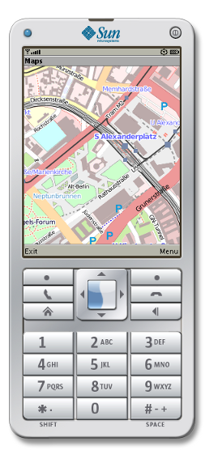

OpenStreetMap Offline Viewer For Java ME Phones

This is OpenStreetMap for Java ME compatible mobile phones. The application was originally created by Tim Hutt. See the Mobile Street Map hompage from Tim Hutt for more details. The map viewer is an offline viewer, though no Internet connection is neccessary for viewing maps. The viewer contains a street index and has two zoom levels.
I adpoted the toolchain to create arbitrary maps from OpenStreetMap data which can be viewed with the Mobile Steet Map application.
Java ME Application
The Java ME application (midlet) is a general map viewer. When the application is started, it asks the user to select a map file.
Download of the application from the Mobile Street Map hompage from Tim Hutt.
Maps
A map file has the extension .mapth. It contains an overview and a detail map as well as a street index. The data of the maps are originated from OpenStreetMap.
Creating Maps
In the Git repository you'll
find the tools to create a .mapth file. Just run
./createmap.sh WEST NORTH EAST SOUTH ZOOM1 ZOOM2 [NAME]
Where WEST, NORTH, SOUTH are the geographical coordinates of the desired area of
the map and ZOOM1 and ZOOM2 are the OSM zoom levels of the overview and of the
detailed map. NAME is optional and the name of the resulting file. To find out
the coordinates and zoom levels you can for example use the export function of
the OpenStreetMap website.
Download the resulting .mapth file to the phone and select the new file using
Options->Select Map.
Contact
timo-e ät freenet dot de
2011-09-21